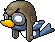

Lv. 31 · #3230307
처프
머리에는 고글과 헬멧을 쓴 새 형태의 몬스터이다. 에오스탑 주변을 날아다니며 탑을 오가는 모험가들을 괴롭히곤 한다. 지구방위본부의 누군가가 기르던 것이 탈출했다는 소문이 있지만 주인이 누군인지는 밝혀지지 않았다.
스탯
레벨 31- HP
- 800
- MP
- 0
- EXP
- 62
- 넉백 가능 데미지
- 0+
- 물리 데미지
- 95
- 마법 데미지
- 0
- 물리 방어력
- 60
- 마법 방어력
- 50
- 속도
- -10
- 31레벨 에서의 필요 명중
- 36.66
- 메소
- 232.5
- 속성관계
- 미기재
- 체경비
- 12.90
- 형태
- 조류형
출현 지역
출현 맵 3개맵 이름을 누르면 메이플노트의 맵 정보가 열립니다.
드롭 테이블
전체 29개| 아이템 | 아이템 ID | 드롭 확률 |
|---|---|---|
| 낡은 고글 | 4000123 | 50% |
| 하얀 포션 | 2000002 | 1% |
| 파란 포션 | 2000003 | 1% |
| 활전용 화살 | 2060000 | 0.8% |
| 석궁전용 화살 | 2061000 | 0.8% |
| 강철의 원석 | 4010001 | 0.3% |
| 흑수정의 원석 | 4020008 | 0.1% |
| 지혜의 크리스탈 원석 | 4004001 | 0.08% |
| 마법의 가루(보라) | 4007005 | 0.03% |
| 마법의 가루(하얀색) | 4007001 | 0.03% |
| 그린 핀터 | 1002036 | 0.01% |
| 석궁 제작의 촉진제 | 4130013 | 0.01% |
| 완드 제작의 촉진제 | 4130010 | 0.01% |
| 파이어 잭 | 1312005 | 0.01% |
| 레드 헌터스 아머 바지 | 1060058 | 0.01% |
| 레드 헌터스 아머 | 1040069 | 0.01% |
| 쌍지단도 | 1332004 | 0.01% |
| 퍼플 도로네스 로브 | 1051004 | 0.01% |
| 나뭇가지 | 4000003 | 0.01% |
| 뻣뻣한 깃털 | 4003004 | 0.01% |
| 스틸 브리건 | 1082008 | 0.008% |
| 레드 라인부츠 | 1072104 | 0.008% |
| 단검 제작의 촉진제 | 4130014 | 0.008% |
| 커틀러스 | 1302004 | 0.007% |
| 그린 필퍼 | 1002183 | 0.007% |
| 블루 길티언 | 1002152 | 0.007% |
| 브라운 피에르슈즈 | 1072120 | 0.007% |
| 아이언 너클 | 1082023 | 0.007% |
| 프라임 핸즈 | 1482004 | 0.0016% |
조건에 맞는 드롭 아이템이 없습니다.
확률은 메이플노트에 게시된 값입니다. 아이템 이름을 누르면 원본 아이템 정보가 열립니다. 과거 버전 데이터이므로 실제 메이플랜드와 다를 수 있습니다.